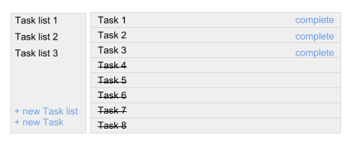

JavaScript > Application development
-
How would you build simple TODO app. Describe your choice of techologies and tools: languages, frameworks, testing and deployment.

-
I would choose to use the Play framework using Scala and Coffeescript. I like Scala and Coffeescript for two reasons. Both require less coding which makes development faster. And both are compiled to the most efficient java byte code and javascript code respectively. Additionally, since Coffeescript is compiled, it allows common javascript typing errors to be caught at compile time.
I would use jQuery javascript framework for DOM interaction.
I would pick jQueryMobile to make it compatible for mobile devices.
Play and Scala provide a good unit testing environment. For front end development, I find Chrome's element inspector to be very helpful. I also use Firefox's and IE's inspectors as well, but not as much.